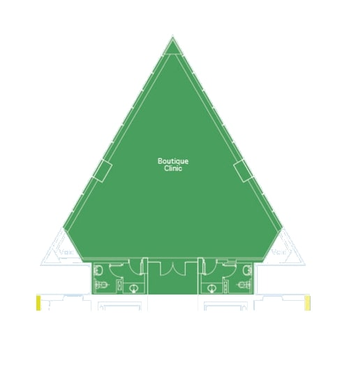
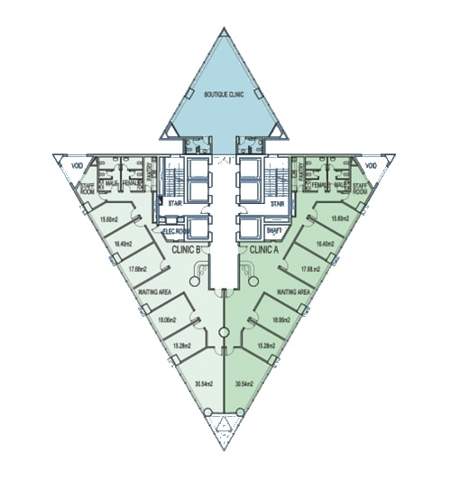

Clinic Types Available for Lease
Clover Tower offers a variety of clinic types tailored to meet the needs of different medical practices. Click to learn more about each type.

Boutique Clinics
Premium and private clinics located on the top floors of Clover Tower...
Floors 1–3 Clinics
Ideal for cosmetic, dermatology, and dental clinics...

Floors 4–8 Clinics
Fully equipped clinics suitable for a wide range of specialties...
Floors 9–17 Clinics
Spacious and customizable. Ideal for growing practices...

Floors 18–19 Clinics
Executive-level clinics offering enhanced privacy and views...